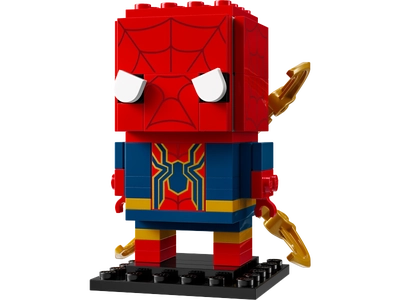
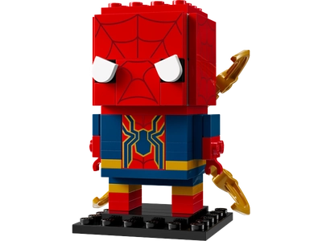
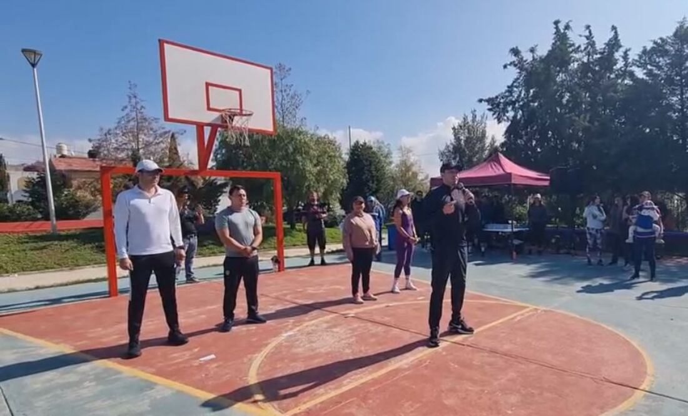
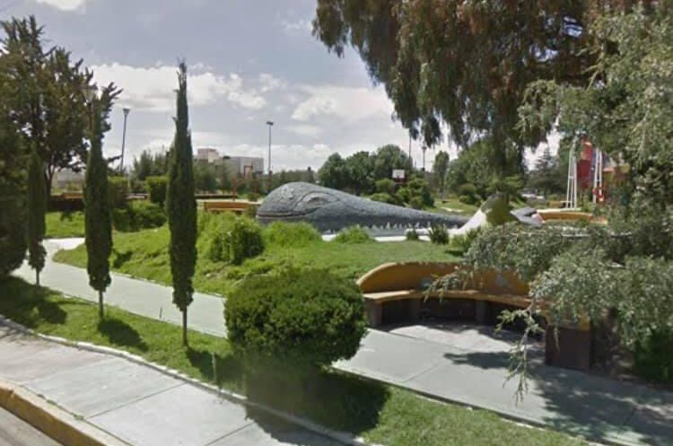
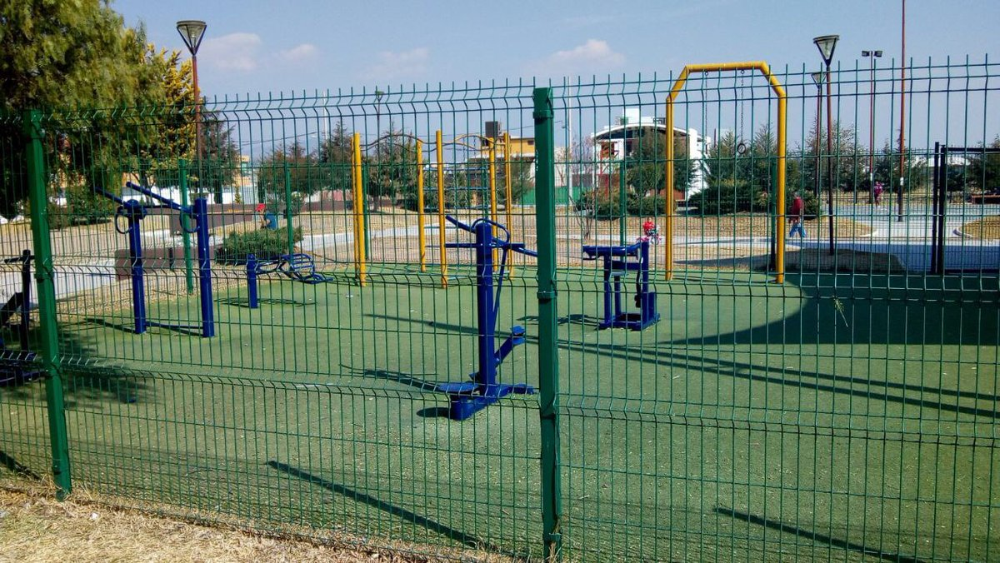

Parque de la Ballena
El Parque de la Ballena, ubicado en la colonia Juan C. Doria de Pachuca, es un espacio recreativo diseñado para el disfrute de familias y personas de todas las edades. Inaugurado en diciembre de 2012, este parque cuenta con diversas instalaciones que promueven la convivencia y el bienestar de la comunidad.
Las canchas deportivas
Cuenta con una cancha deportiva multifuncional que ha sido rehabilitada para ofrecer un espacio adecuado para la práctica de diversas disciplinas deportivas. Esta cancha es utilizada para actividades como fútbol rápido y baloncesto, brindando a la comunidad un lugar para el ejercicio y la recreación. Además, el parque ha sido sede de eventos deportivos comunitarios, fomentando la participación activa de los habitantes en actividades físicas y fortaleciendo la convivencia social.
El área de patinaje
El área de patinaje cuenta con dos bancas y un redondel que alberga un árbol que proporciona una sombra para los días soleados de verano. La superficie es de concreto pulido y de manera constante por medio de los vecinos recibe manteimiento que asegura el buen rodamiento de los patines.
Los juegos infantiles
El área de patinaje cuenta con dos bancas y un redondel que alberga un árbol que proporciona una sombra para los días soleados de verano. La superficie es de concreto pulido y de manera constante por medio de los vecinos recibe manteimiento que asegura el buen rodamiento de los patines.